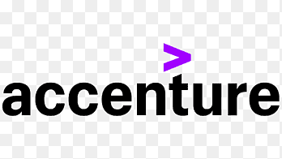
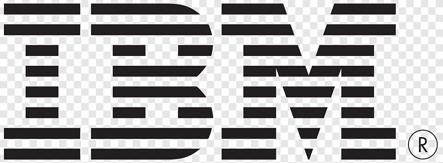
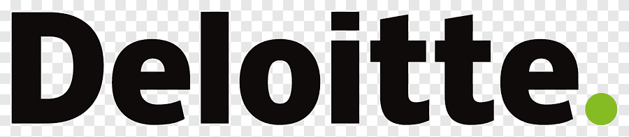

PABLO MARTÍN POZA
Transformando la complejidad técnica en ventaja competitiva.





Trayectoria y Visión.
Experto en estrategia tecnológica con un sólido historial en la creación de soluciones de datos para mercados internacionales. Mi carrera se ha desarrollado en la intersección de la innovación y la ejecución, gestionando presupuestos y proyectos de misión crítica en entornos de alta exigencia.
Especialista en IA y Data: Diseño de estrategias que integran GenAI y modelos analíticos avanzados en el corazón de la empresa.
Liderazgo Global: Experiencia probada gestionando equipos y proyectos transversales en Europa y Latinoamérica.
Enfoque en Resultados: Mi consultoría no solo propone tecnología, sino que garantiza que cada pieza de software sea un activo estratégico alineado con los objetivos de la dirección.


En los medios.
 EL CRONISTA
EL CRONISTA
La tercera oleada de la Inteligencia Artificial va a empezar este año
Análisis sobre cómo las tecnologías emergentes y la GenAI transformarán los negocios y la ejecución corporativa.
 LA NACIÓN
LA NACIÓN
Formación, captación de talentos y nuevas oficinas: los desafíos frente a las transformaciones
Los retos actuales en el ecosistema laboral tecnológico, estrategias de captación y el impacto en la educación.
Arquitecturas de decisión inteligente.
Soluciones diseñadas para escalar el impacto de los datos en toda la organización.
Estrategia de Datos
Diseño de hojas de ruta que alinean los activos de datos con los objetivos de negocio más ambiciosos.
- check Auditoría de Ecosistemas
- check Modelos de Gobierno
IA Generativa & ML
Implementación de soluciones de inteligencia artificial que automatizan lo complejo y liberan el talento humano.
Performance Metrics
Visualización y análisis avanzado para transformar cada interacción en una oportunidad de mejora.
Divulgando el futuro de la IA.
Charlas y seminarios diseñados para directivos que buscan comprender el impacto real de la tecnología.
Pensamiento estratégico.

Por qué el 80% de los proyectos de IA fallan (y cómo evitarlo).
Analizamos los errores estructurales más comunes en la implementación de soluciones cognitivas en la gran empresa.

La era del Chief AI Officer: ¿Necesitas este perfil hoy?
La evolución del liderazgo tecnológico en un entorno dominado por modelos fundacionales.

De Big Data a Smart Data: Calidad sobre cantidad.
Metodologías para refinar el ruido digital en señales accionables para la toma de decisiones.